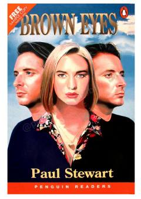

BEMehmonxonada o'zini boshqa odamdek ko'rsatayotgan sirli shaxs haqidagi detektiv hikoya.
Piter va Syuzan Rid har yili dam olish uchun tashrif buyuradigan mehmonxonada g'alati voqealar yuz beradi. Noma'lum shaxs Piterning o'zini ko'rsatib, ularning ta'tilini xavf ostiga qo'yadi. Ushbu detektiv hikoya ingliz tilini o'rganuvchilar uchun maxsus moslashtirilgan.